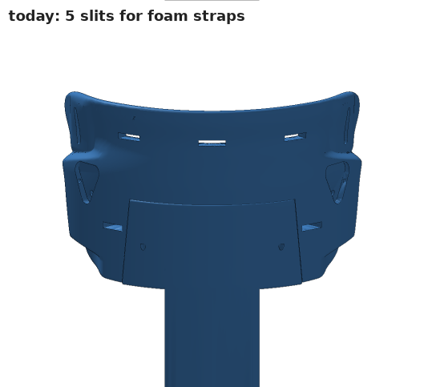
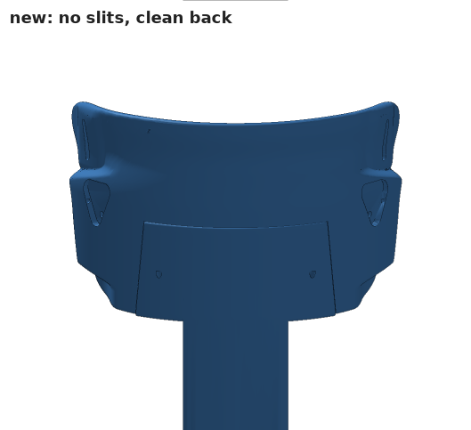
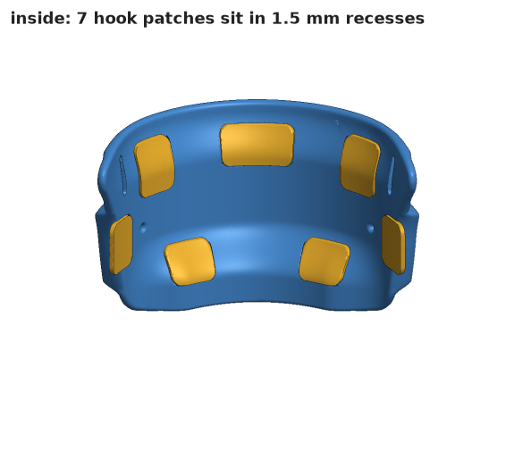
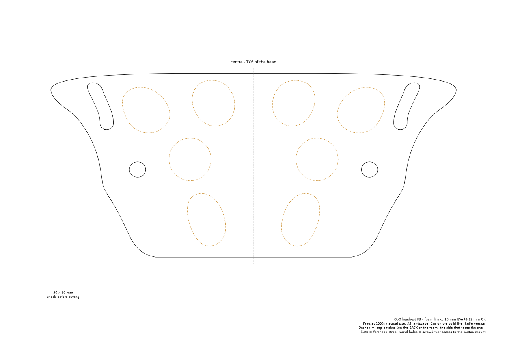
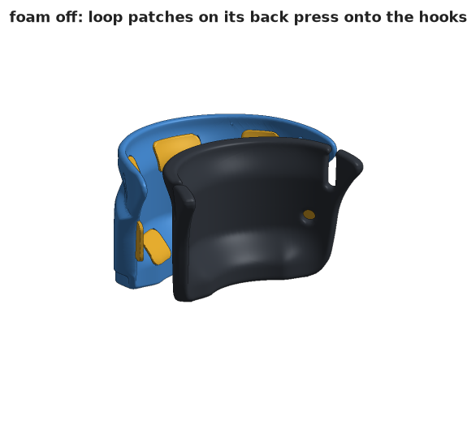
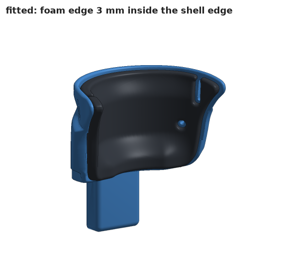
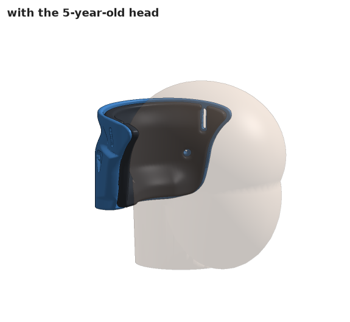
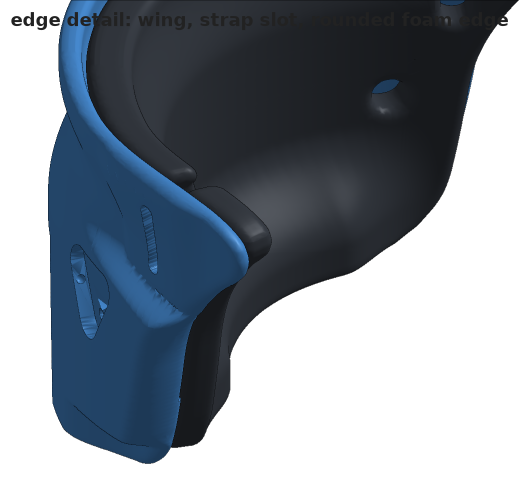

The padding: what material, how to cut it, how it attaches
This is for the locked F3 headrest, with the M1 mast, B1 base and R2 receiver. The goal: one foam piece that fits exactly, can be cut by any volunteer, comes off for cleaning, and keeps the shell looking clean.
What the commercial headrests do
- Whitmyer (Sunrise), the most common clinical headrest: a foam layer with self-adhesive loop on its back, sitting on hook material stuck to the panel, so the foam can be swapped. The cover is Lycra as standard, or Dartex (a wipeable PU-coated fabric) with a zip. [tech info, PLUSH]
- Orthotic workshops use closed-cell, heat-formable foams: Plastazote (polyethylene, around 45 kg/m³, washable, formed at about 110–135 °C) and EVA equivalents such as P-Cell. [Ottobock Plastazote, P-Cell]
- Printed TPU gyroid cushions are being studied as a replacement for medical PU foam, with low infill (about 5% gyroid) recommended for comfort. It's promising, but there is no tested headrest recipe yet. [Nace et al., graded gyroid]
Material options
| Material | Feel | Clean | Get it | Notes |
|---|---|---|---|---|
| 1. High-density EVA sheet, 10 mm (cosplay EVA, about 85 kg/m³) | firm-medium | wipe (closed cell) | craft shops, online, cheap | Cuts cleanly, rounds and forms with a heat gun. The POC pick. [example 85 kg/m³] |
| 2. EVA play or puzzle mat, 10–12 mm | softer | wipe | often already at home | Textured face. Lower density, so softer and squashes more. Fine for a first fit. |
| 3. Plastazote / P-Cell, 6–12 mm | soft to medium (by grade) | wash | orthotic suppliers | The clinical standard. Best for the real product once the shape is proven. |
| 4. Soft PU or memory foam with a Lycra or Dartex cover | softest | wash the cover | upholstery shops | Most comfortable. The foam is open-cell, so it must have a cover, which means sewing. |
| 5. Printed TPU 95A gyroid (about 5–10%, solid skin) | tunable | wipe the skin | print it | No cutting and an exact fit. It needs TPU tuning and a comfort test. Later, not for the POC. |
Attachment options
| How | Look | Removable for washing | Verdict |
|---|---|---|---|
| A. Hook-and-loop in shallow recesses (as Whitmyer does) | nothing shows; the shell back has no holes | yes | Recommended. Any foam from 1 to 4 works with it. |
| B. Straps through slits (today's F3) | 5 slits show on the back | fiddly | Drop it: it spoils the clean back and needs tabs cut in the foam. |
| C. Contact glue | clean | no | No: can't clean it or change thickness as the child grows. |
| D. Stretch cover with elastic over the rim | covers the shell's front edge | yes | Only for foam 4. It hides the styled edge. |
The shell change I'd make (to the locked F3, needs your OK)
Remove the 5 foam-strap slits and add 7 blind recesses, 1.5 mm deep, on the inside for the hook patches. Three things improve: the back is clean, the shell is a little stronger (no slits), and the attachment no longer depends on the foam type. The strap slots, button-screw holes and everything else are unchanged.



Thickness: one template, thickness tunes the fit
I checked the gap to the head models, with the foam sitting 1 mm off the shell on the hook-and-loop:
| Foam | 5-year-old head: closest gap | 2-year-old head: closest gap | Use |
|---|---|---|---|
| 6 mm | 6.9 mm | 7.5 mm | too loose alone: use two layers |
| 8 mm | 4.8 | 5.5 | OK, loose |
| 10 mm | 2.6 | 3.3 | nominal |
| 12 mm | 0.4 | 0.7 | snug: for a smaller head or "more support" |
So the therapist can tune the fit by choosing the foam thickness, with the same shell and the same template.
How to cut it (no special tools)
- Template: print foam_template_A4.pdf at 100% / actual size on A4 landscape, and check the 50 mm square. It is laid out flat from the real 3D surface (237 × 108 mm), with the strap slots, screwdriver holes and patch positions marked. If you make several pads, print the stencil
addons/headrest/PAD_foam/foam_stencil_2mm.stl(in the project folder) (2 mm thick, fits the P1S bed) and trace round it. - Trace with a silver or white pen.
- Cut with a fresh snap-off blade, held upright, in 2–3 light passes. Use a 7 mm punch for the strap-slot ends and a 9 mm punch for the screwdriver holes.
- Edges: pass a heat gun along the head-side edge. It shrinks and rounds the cut edge, which then reads as part of the design.
- Form: 10 mm EVA bends round the head curve cold. Only the roll at the bottom (behind the neck) is worth warming until the surface just shines, then press it into shape. Do that over a ball or with baking paper in between, not hot against the PETG shell, which softens at about 80 °C.

How it attaches
- Wipe the 7 recesses with alcohol. Stick the hook patches (cut from 25 mm self-adhesive tape) into the recesses, press firmly, and leave 24 h for the adhesive to set.
- Press the loop patches onto the hooks, liners still on. Peel the liners and press the foam in place: the patches end up exactly where they belong.
- To clean or change the foam, peel it out.




My POC pick
10 mm high-density EVA, cut from the template, with the edges rounded by heat gun, attached by hook-and-loop in recesses, on the F3 shell without slits. It is cheap, wipeable, cuts cleanly and is easy to swap. After the first fitting, the therapist decides whether it is too firm. If so, Plastazote or a soft foam with a cover drops in with the same template and the same patches.
The model shows no clash between the foam and the shell at any thickness from 6 to 12 mm.